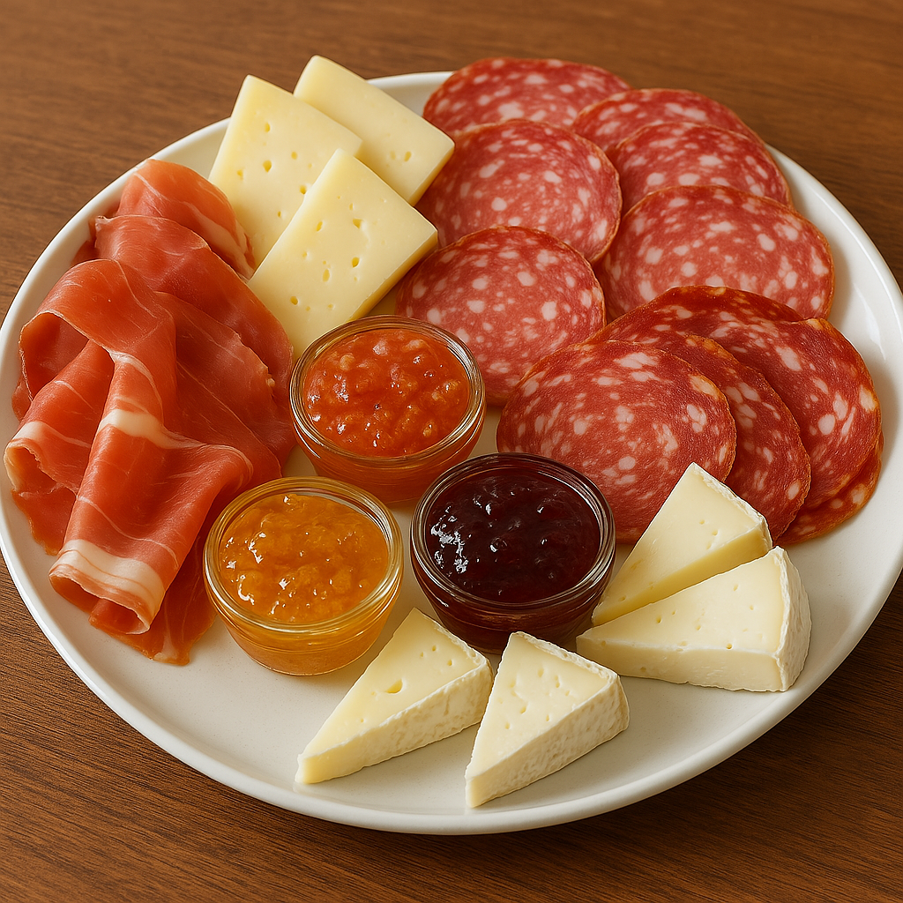
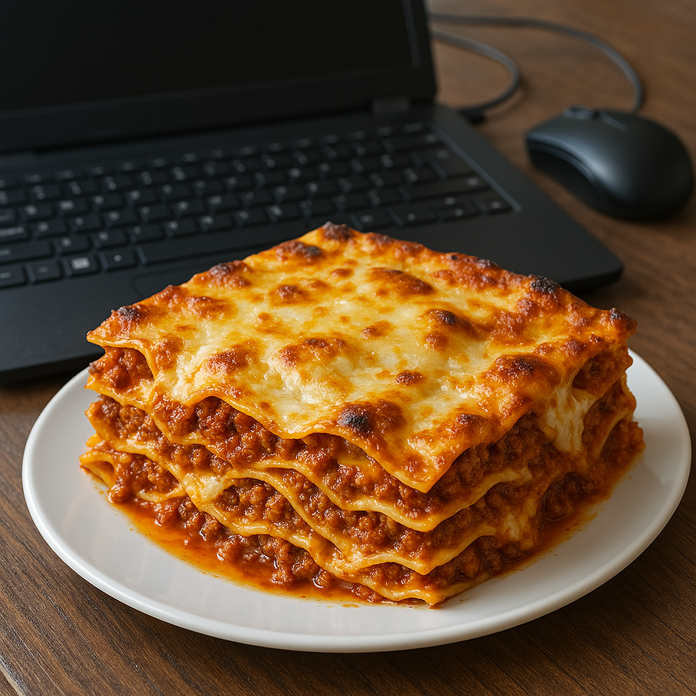

Scopri le nostre Degustazioni
Assapora la qualità e la tradizione della nostra gastronomia con degustazioni guidate pensate per farti conoscere i nostri migliori prodotti locali.

Salumi e Formaggi
Un tagliere che è una vera e propria festa per il palato! Salumi artigianali, formaggi locali e confetture che si sposano alla perfezione, offrendo un mix di sapori che conquista al primo assaggio. Un piacere autentico per ogni amante della buona cucina!
- Persone
- 4 persone
- Durata
- 2 ore
- Prezzo
- 25€ a persona

Pasticcio alla Bolognese
Il Pasticcio alla Bolognese perfetto per studenti universitari di informatica che hanno fame da codice e non hanno tempo di debug! Un piatto che soddisfa anche le esigenze di un algoritmo affamato... e soprattutto che fa felici i vostri stomaci!
- Persone
- 1 persona
- Durata
- 1 ora
- Prezzo
- 15€ a persona